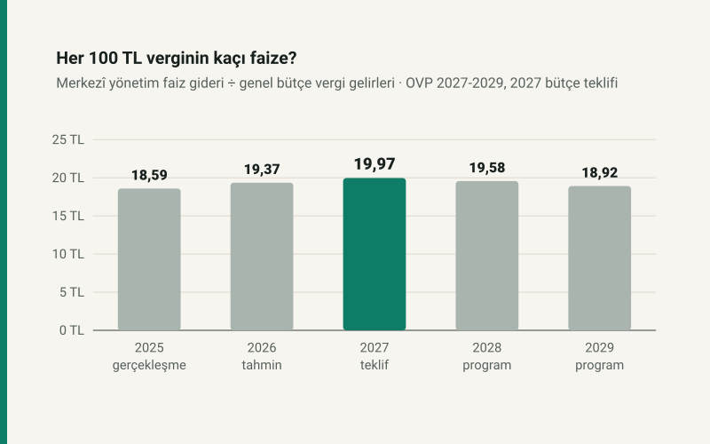

Güncelleme, 17 Ekim 2026: bütçe teklifi geldi
2027 Merkezî Yönetim Bütçe Kanunu Teklifi 16 Ekim 2026'da Meclis'e sunuldu. Faiz ödeneği ve vergi tahmini Orta Vadeli Program'la aynı; tek fark sermaye giderlerinde, 3,1 milyar TL. Yazının 2027 rakamları artık tekliften; OVP ile karşılaştırma aşağıda.
Kısa cevap
2027 Merkezî Yönetim Bütçe Kanunu Teklifi'ne göre merkezî yönetimin faiz ödeneği 3.975,0 milyar TL, genel bütçe vergi gelirleri tahmini 19.906,0 milyar TL. Her 100 TL vergiye karşılık 19,97 TL faiz ödeniyor. Rakamlar Eylül'deki Orta Vadeli Program'la aynı.
Vergi faize ayrılmış bir kaynak değildir; oran iki büyüklüğü karşılaştırır. Ama bütçenin faiz yükünü taşıma gücünü en sade biçimde gösteren ölçü budur.
Beş yılın tablosu
| Yıl | Vergi gelirleri | Faiz gideri | 100 TL vergiye faiz | Durum |
|---|---|---|---|---|
| 2025 | 11.049,8 | 2.054,4 | 18,59 TL | gerçekleşme |
| 2026 | 14.585,7 | 2.824,9 | 19,37 TL | gerçekleşme tahmini |
| 2027 | 19.906,0 | 3.975,0 | 19,97 TL | program |
| 2028 | 23.973,1 | 4.693,9 | 19,58 TL | program |
| 2029 | 27.718,5 | 5.244,8 | 18,92 TL | program |
2027'de yeni verginin beşte biri faize
2026'dan 2027'ye vergi gelirleri 5.320,30 milyar TL (%36,5) artıyor; faiz gideri 1.150,10 milyar TL (%40,7). Faiz vergiden hızlı büyüdüğü için oran yükseliyor: yeni toplanan her 100 TL verginin 21,6 TL'si artan faize karşılık geliyor. Aynı yıl nominal GSYH %30,3 büyüyor; vergi geliri ekonomiden hızlı, faiz ondan da hızlı artıyor.
Açığın tamamına yakını faiz
Bütçe teklifi 2027 için 3.868,1 milyar TL bütçe açığı öngörüyor (OVP: 3.865,0). Faiz gideri bu açıktan büyük: faiz hariç tutulduğunda bütçe 106,9 milyar TL fazla veriyor (faiz dışı denge, GSYH'nın %0,1'i). Yani 2027 açığı, faiz dışındaki harcamaların gelirleri aşmasından değil faizden doğuyor. Faiz, toplam harcamaların %14,6'sı, toplam gelirlerin %17,0'sı.
Milyar TL, 2027 bütçe kanun teklifi. Soldan gelen para (vergi, diğer gelirler ve borçlanma) bütçede toplanıp sağdaki harcama kalemlerine dağılır. Kalınlık tutarla orantılı.
Akışı tablo olarak gör
| Nereden | Nereye | Tutar |
|---|---|---|
| Vergi gelirleri | Bütçe | 19.906,0 mr TL |
| Diğer gelirler | Bütçe | 3.502,0 mr TL |
| Borçlanma (açık) | Bütçe | 3.868,1 mr TL |
| Bütçe | Faiz | 3.975,0 mr TL |
| Bütçe | Cari transferler | 10.240,1 mr TL |
| Bütçe | Personel | 6.318,5 mr TL |
| Bütçe | Mal ve hizmet alımı | 2.184,3 mr TL |
| Bütçe | Sermaye giderleri | 1.854,8 mr TL |
| Bütçe | SGK devlet primi | 798,5 mr TL |
| Bütçe | Sermaye transferleri | 750,4 mr TL |
| Bütçe | Borç verme | 613,0 mr TL |
| Bütçe | Yedek ödenek | 541,6 mr TL |
Çalışan başına
OVP'nin 2027 istihdam varsayımı 33.236 bin kişi. Faiz giderini buna bölünce çalışan başına yılda 119.599 TL, ayda 9.967 TL çıkıyor; nüfusa bölünce kişi başına 45.765 TL. Bu bir vergi tutarı değil, büyüklüğü tanıdık bir birime çevirme yoludur.
Bir bordroda karşılığı (temsili)
2027 gelir vergisi tarifesi henüz yok. Bugünkü (2026) tarifeyle ayda 80.000 TL brüt kazanan bir çalışan yılda 124.938,80 TL gelir vergisi öder. 2027 oranıyla bunun 24.948,79 TL'si, ayda 2.079,07 TL, faiz giderinin karşılığına denk gelir. Hesap temsilidir: gelir vergisi bütçenin vergi gelirlerinin yalnız bir kısmıdır ve vergiler kalem kalem harcamaya bağlanmaz. Kendi maaşınızın vergisi için brüt-net maaş hesaplama.
OVP ile bütçe teklifi: ne değişti?
Neredeyse hiçbir şey. Faiz ödeneği ve vergi tahmini aynı; vergi tahmini teklifte 19.906.044 milyon TL, OVP bunu 19.906,0 milyar TL olarak yuvarlıyor. Harcamalarda tek fark sermaye giderlerinde: 1.851,7 yerine 1.854,8 milyar TL. Bu 3,1 milyar TL, açığı 3.868,1 milyar TL'ye, faiz dışı fazlayı 106,9 milyar TL'ye taşıyor. Oran değişmiyor: her 100 TL vergiye 19,97 TL faiz.
| Kalem | OVP | Teklif | Fark |
|---|---|---|---|
| Faiz gideri | 3.975,0 | 3.975,0 | 0,0 |
| Genel bütçe vergi gelirleri | 19.906,0 | 19.906,0 | 0,0 |
| Toplam gelirler | 23.408,0 | 23.408,0 | 0,0 |
| Sermaye giderleri | 1.851,7 | 1.854,8 | +3,1 |
| Toplam harcamalar | 27.273,0 | 27.276,1 | +3,1 |
| Bütçe açığı | 3.865,0 | 3.868,1 | +3,1 |
| Faiz dışı denge | 110,0 | 106,9 | −3,1 |
| 100 TL vergiye faiz | 19,97 TL | 19,97 TL | 0,00 |
Teklif henüz kanun değil. Plan ve Bütçe Komisyonu ile Genel Kurul ödenekleri değiştirebilir; bütçe kanunu yıl sonunda Resmî Gazete'de yayımlanınca rakamlar yeniden karşılaştırılacak.
Varsayımlar ve sınırlar
- Vergi gelirleri tablodaki "genel bütçe vergi gelirleri"dir; sosyal güvenlik primleri ve vergi dışı gelirler dahil değildir.
- 2026 rakamları gerçekleşme tahmini, 2027 rakamları bütçe teklifi, 2028–2029 rakamları program hedefidir. Teklif Mecliste değişebilir; gerçekleşme de farklı olabilir.
- Teklifin gelirleri net tutardır: ret ve iadeler ile düzenleyici kurumların gelirden ayrılan payları hariç. Teklifin gelir cetvelindeki brüt vergi tutarı (22.139,3 milyar TL) bu yüzden burada kullanılmaz; OVP ile aynı tanım net tutardır.
- Bordro örneği 2026 tarifesiyle ve tek bir maaş için hesaplandı; ülke ortalaması değildir.
Kaynaklar
- Orta Vadeli Program (2027-2029), Cumhurbaşkanı Kararı 11752, Resmî Gazete 6 Eylül 2026, sayı 33362 (1. mükerrer): Tablo 1.1 Temel Ekonomik Büyüklükler ve Tablo 1.6 Merkezî Yönetim Bütçesi. 2 Ekim 2026'da okundu.
- 2027 Yılı Bütçe Gerekçesi, Tablo 1 Merkezi Yönetim Bütçe Dengesi (milyon TL); 2027 Yılı Merkezi Yönetim Bütçe Kanunu Teklifi, Strateji ve Bütçe Başkanlığı, TBMM'ye 16 Ekim 2026'da sunuldu. 17 Ekim 2026'da okundu.
- Türkiye Cumhuriyeti Anayasası m.161: bütçe teklifinin sunulma süresi (mülga m.162, 6771 sayılı Kanunla 2017'de yürürlükten kaldırıldı).
Tablo değerleri sitenin finans/butce.js modülüne OVP'den ve bütçe gerekçesinden birebir girildi; oranlar ve bordro örneği bu modülden ve bordro motorundan otomatik testle yeniden üretilir. Test, tablonun kendi toplamlarını da (kalemler, denge = gelir − gider) denetler.
Sık sorulan sorular
2027 bütçesinde faiz gideri ne kadar?
Bütçe teklifine göre 3.975,0 milyar TL, GSYH'nın %3,6'sı; Orta Vadeli Program'la aynı. 2026 gerçekleşme tahmini 2.824,9 milyar TL.
Vergilerin yüzde kaçı faize gidiyor?
2027 bütçe teklifiyle faiz gideri genel bütçe vergi gelirlerinin %19,97'si: her 100 TL vergiye karşılık 19,97 TL faiz.
2027 bütçe teklifi ne zaman Meclis'e sunuldu?
16 Ekim 2026'da. Anayasa m.161'e göre son gün 17 Ekim'di. Teklif Plan ve Bütçe Komisyonu ile Genel Kurul'da görüşülüp yıl sonuna kadar kanunlaşır.